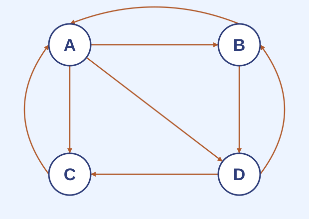

Chọn một tập ứng viên, con người xác nhận trang đáng tin.
Miền được kiểm soát
Chọn các miền có cơ chế thành viên, rồi mở rộng theo quốc gia và tổ chức.
Tập nhỏ giảm công kiểm tra; độ phủ ngắn theo liên kết giúp truyền hạng đến nhiều trang tốt.
$T\ne\varnothing,\quad q_T\ge0,\quad e^Tq_T=1$
TrustRank phụ thuộc tập tin cậy
Thiếu chủ đề hoặc khu vực làm giảm hạng của trang tốt xa hạt giống.
Trang cho phép nội dung người dùng có thể truyền hạng sang liên kết ngoài.
Hạt giống bị chọn sai làm sai lệch toàn bộ vector.
Điểm cao không chứng minh trang sạch; điểm thấp không chứng minh trang rác.
Khối lượng rác là một tỷ số chẩn đoán
$s_p=\frac{r_p-t_p}{r_p},\qquad r_p>0$
$s_p<0$
TrustRank lớn hơn PageRank cơ sở.
$s_p\approx0$
Hai điểm gần nhau.
$s_p$ lớn
Trang cần được xem xét thêm.
Bảng số liệu trong Hình 5.17
Bảng nguồn: PageRank không có hệ số giảm; TrustRank dùng $\beta=0{,}8$ và $T=\{B,D\}$.
Nút
PageRank
TrustRank
Khối lượng rác
A
$3/9$
$54/210$
$8/35\approx0{,}229$
B
$2/9$
$59/210$
$-37/140\approx-0{,}264$
C
$2/9$
$38/210$
$13/70\approx0{,}186$
D
$2/9$
$59/210$
$-37/140\approx-0{,}264$
Hai quy ước nguồn khác nhau: PageRank không có hệ số giảm, TrustRank có $\beta=0{,}8$. So sánh hai thiết lập này chỉ để minh họa công thức; trong ứng dụng, nên tính hai vector với cùng $\beta$ và cùng quy ước nút cụt trước khi so sánh.
Kiểm tra dấu của tỷ số
Câu hỏi: nếu $t_p>r_p>0$, khối lượng rác có dấu gì và có cần kẹp về 0 không?
Hai vai trò trong đồ thị con truy vấn
Đầu vào lớn
Không thể dựng và nhân ma trận đặc của toàn Web cho từng truy vấn.
Phạm vi HITS
Một đồ thị con thưa của tập kết quả; đầu ra gồm hai điểm cho mỗi trang.
TrustRank cho mỗi trang một điểm; HITS tách điểm trung tâm $h_i$ và điểm thẩm quyền $a_i$.
Điểm thẩm quyền $a_i$: tổng điểm trung tâm của các nút trỏ đến $i$. Điểm trung tâm $h_i$: tổng điểm thẩm quyền của các nút mà $i$ trỏ đến. Mỗi lượt dùng đồng bộ các giá trị của lượt trước.
Thứ tự nút: $(A,B,C,D,E)$. Quy tắc chuẩn hóa: sau mỗi phép nhân, chia từng thành phần cho thành phần lớn nhất của vector thô.
Vòng thứ nhất của Hình 5.20
Nút
$h^{(0)}$
$L^Th^{(0)}$
$a^{(1)}$
$La^{(1)}$
$h^{(1)}$
A
1
1
$1/2$
3
1
B
1
2
1
$3/2$
$1/2$
C
1
2
1
$1/2$
$1/6$
D
1
2
1
2
$2/3$
E
1
1
$1/2$
0
0
Vòng thứ hai của Hình 5.20
Nút
$L^Th^{(1)}$
$a^{(2)}$
$La^{(2)}$
$h^{(2)}$
A
$1/2$
$3/10$
$29/10$
1
B
$5/3$
1
$6/5$
$12/29$
C
$5/3$
1
$1/10$
$1/29$
D
$3/2$
$9/10$
2
$20/29$
E
$1/6$
$1/10$
0
0
Phép lặp HITS xử lý cả vector 0
đầu vào: L; K_max ∈ ℕ, K_max ≥ 1; 0 < τ < 1
h ← (1,…,1); a ← (0,…,0)
cho u = 1,…,K_max:
a_thô ← Lᵀh
nếu ||a_thô||∞ = 0 thì trả (0_n,0_n,sai,đúng,u)
a_mới ← a_thô / ||a_thô||∞
h_thô ← La_mới
nếu ||h_thô||∞ = 0 thì trả (0_n,0_n,sai,đúng,u)
h_mới ← h_thô / ||h_thô||∞
nếu max(||a_mới−a||∞,||h_mới−h||∞) ≤ τ:
trả (h_mới,a_mới,đúng,sai,u)
(h,a) ← (h_mới,a_mới)
trả (h,a,sai,sai,K_max)
Hai bài toán trị riêng không cần dựng tích
$h\propto LL^Th,\qquad a\propto L^TLa$
$LL^T$ và $L^TL$ có thể đặc hơn $L$.
Tính lần lượt bằng $L^Th$ rồi $La$ giữ biểu diễn thưa.
Hướng trội là hướng có trị riêng lớn nhất theo trị tuyệt đối, lớn nghiêm ngặt hơn trị riêng kế tiếp.
Mỗi vòng quét cạnh hai lần
Công việc
$\Theta(n+m_G)$ cho $L^Th$ và $La$ trên danh sách cạnh.
Đồng bộ
Hai phép lấy cực đại toàn cục để chuẩn hóa $a$ và $h$.
Câu hỏi: cạnh $i\to j$ cập nhật $a_j$ từ $h_i$ hay cập nhật $h_i$ từ $a_j$? Một vòng đọc cạnh mấy lần?
Bốn mô hình, bốn mục tiêu
Cơ chế truyền điểm, vector dịch chuyển và phạm vi đồ thị quyết định ý nghĩa của điểm.
So sánh cơ chế truyền điểm
Mô hình
Truyền trên cạnh
Dịch chuyển hoặc khởi tạo
Phạm vi và đầu ra
PageRank toàn cục
$P$ chia theo bậc ra
Dịch chuyển đều
Toàn đồ thị; một vector
PageRank theo chủ đề
$P$ chia theo bậc ra
$q_S$
Toàn đồ thị; $k$ vector
TrustRank
$P$ chia theo bậc ra
$q_T$, khởi tạo $t^{(0)}=q_T$
Toàn đồ thị; một vector tin cậy
HITS
$L,L^T$ Boolean; không chia bậc
$h^{(0)}=e$, $a^{(0)}=0$
Đồ thị con; hai vector $h,a$
Chọn mô hình theo mục tiêu và chi phí
PageRank và TrustRank
$\Theta(n+m_G)$ mỗi vòng.
Theo $k$ chủ đề
$\Theta(k(n+m_G))$ mỗi vòng.
HITS
$\Theta(n+m_G)$ trên đồ thị con; hai lượt cạnh.
Đầu ra
Một điểm, $k$ điểm theo chủ đề, điểm tin cậy hoặc hai vai trò.
Câu hỏi: chọn mô hình cho xếp hạng theo thể thao, giảm tác động liên kết rác và tách trang chỉ dẫn khỏi trang nội dung.
Tổng kết và bài tập trên lớp
Thu hồi mục tiêu mở bài: đã tính PageRank theo chủ đề, phân tích luồng hạng trong cụm thao túng, diễn giải TrustRank và khối lượng rác, chạy và kiểm tra HITS.
Hai lựa chọn thiết kế tạo bốn mô hình: thay vector dịch chuyển của PageRank, hoặc dùng HITS để truyền hai vai trò.
Bài tập trên lớp: PageRank theo chủ đề, dữ kiện dùng chung, TrustRank và HITS.
Bài tập trên lớp
Bốn bài từ MMDS: PageRank theo chủ đề, TrustRank và khối lượng rác, hai điểm HITS.
Một trang dữ kiện dùng chung cho hai bài cuối; mỗi bài có tiêu chuẩn hoàn thành và đáp án trong ghi chú diễn giả.
Bài 5.3.1 · PageRank theo chủ đề

Giữ $\beta=0{,}8$ của Ví dụ 5.10. Tính PageRank theo chủ đề của Hình 5.15 khi tập dịch chuyển là:
chỉ A;
A và C.
Mỗi nhóm giải một ý; sau đó đổi kết quả để kiểm tra tổng bằng 1 và phần dư điểm cố định.
Dùng đồ thị ở trang dữ kiện; $L$ là ma trận Boolean hàng nguồn, khác $P$ là ma trận chuyển cột.
Khởi tạo $h^{(0)}=e$; sau mỗi phép nhân, chia cho thành phần lớn nhất. Một nhóm theo vết hai vòng, một nhóm dùng bảng tính hoặc máy tính để lặp đến khi thay đổi lớn nhất không quá $10^{-3}$; báo ba chữ số thập phân.